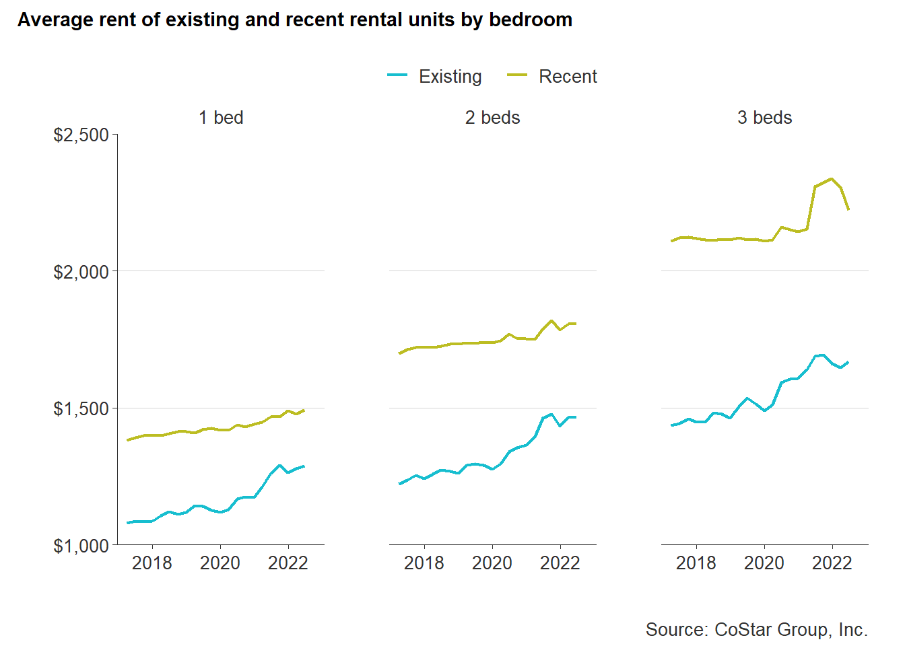

14 Market comparison
This section will make comparisons between recent multifamily developments and existing rental supply in the county. For the purposes of this section, “recent” developments are those built in the past five years, are under construction, or are proposed. This analysis does not include single-family rentals, nor manufactured home communities.
14.1 Price
For much of the past five years, the difference in rental prices between recent and existing rental properties has remained at nearly $400. But when the pandemic hit in the second quarter of 2020, the gap began to narrow.
Both recent and existing properties experienced a jump in average rent in the second quarter of 2020. While recent properties experienced a 1% increase in average rents, existing property average rents increased by 4% — closing the gap to $352. This difference in percent of change over time has continued to Q2 2022.
From Q2 2020 to Q2 2022, average rent for recent properties has changed 3% — from $1,696 to $1,743. Existing property average rent growth was three times (9%) that of recent properties — going from $1,344 to $1,460. From Q2 2017 to Q2 2022, the difference in average rent between recent and existing properties has gone from $410 to $285.
While average rents for recent properties has remained steady, existing property rents have risen dramatically. The COVID-19 pandemic has significantly impacted demand among the existing stock of rental housing in the county — leading to complementary increases in rental prices.
Price difference between recent and existing properties by number of bedrooms follows similar trends. But average rents for recent three-bedroom rentals experienced a significant increase in the middle of 2021 — going from $2,152 in Q2 2021 to $2,337 in Q4 2021. In 2022, these rents began to decline somewhat, but still remained above $2,000.

In all cases, the percent change in average rents for existing rental properties was three times that of recent properties no matter the bedroom count. One- and two-bedroom existing rentals had a near 20 percent increase in average rents from 2017 to 2022, while three-bedroom average rents increased by 16 percent. Average rents for recent rental properties only had an increase of 5 to 7 percent. The difference in rents between recent and existing properties as of Q2 2022 ranges from $204 for one-bedrooms to $552 for three-bedrooms.
14.2 Unit mix
14.2.1 Building style
Consumer preferences can change over time and those preference changes can impact market demand and prices. Multifamily building styles built in the late 20th century were largely in the garden-style apartments. The garden-style emphasizes lower densities and clustered development. Residents typically have ground floor access with no neighbors above.
Existing rental properties are majority garden-style (85 percent). But the composition of recent multifamily development is much more diverse. Although though garden-style apartments are still being produced, the majority (82 percent) of newer multifamily properties are low- or mid-rise buildings.
The shift towards these types of developments provides developers with greater economies of scale. More density makes it more financially possible to finance and develop properties. Without the density that comes through low- and mid-rise buildings, developers have to rely heavily on higher rents or substantial subsidies to make development possible.
14.2.2 Bedrooms
Existing rental development mainly consists of two-bedroom rental homes (55 percent) and one-bedrooms (27 percent). More recent developments have shifted towards to one-bedroom rentals (53 percent). The percent of larger rentals - two- and three-bedrooms - being produced has dropped to 36 percent and 9 percent, respectively.
One-bedroom rentals meets a growing demand among young professionals and aging seniors in the county, but the lack of larger rental homes leaves growing families out of the multifamily rental market. Single-family homes are increasingly meeting the demand for larger families in need of rentals. Although this often is preferred by families who want greater privacy and more in-home separation, the single-family rental market can impact opportunities for potential homebuyers.
14.2.3 Size
On average, the significant number of new one-bedroom apartments are close in size to the county’s existing supply of one-bedroom units—around 750 square feet. New two- and three-bedroom apartments are noticeably larger than older units, however. Recently-built three-bedroom rentals are now approaching 1,500 square feet.
14.3 Amenities
The types of amenities and features on a rental property have also changed of time as consumer preferences and expectations have shifted. While there are many possible examples of “amenities”, this analysis compares the prevalence of four common features across rental properties in the county.
These amenities, which are included in property-level data from CoStar, include:
- Clubhouse,
- On-site property manager,
- Pool, and
- Fitness center.
On average, newer apartment communities are much more likely to have at least two of these amenities compared to older properties. In fact, about 90 percent of all new developments have two or more amenities, versus just 71 percent of existing properties.
14.4 Location
New rental development has occurred all across Chesterfield County in recent years. However, as the map below shows, much of that activity has been concentrated along Route 288 from Midlothian Turnpike south to Hull Street. This development is notable for being located in areas where multifamily housing is not already prevalent.
On the other side of the county, there are five new developments along Route 1, plus several more just to the west following Route 10. These recent properties, unlike those along Route 288, do not make up the majority of multifamily housing in the area.
14.4.1 Proximity to public transportation
Within the county, there are only 20 out of 115 multifamily properties located within a half mile walking distance of a public transit stop. The majority of these properties are existing properties, while only six are recent developments (built in 2017 or later).
These transit stops are mainly located at the city-county border along Midlothian Turnpike or along Route One, where the Greater Richmond Transit Company (GRTC) began local bus service from Falling Creek to John Tyler Community College in March 2020. One recent development (Commonwealth Apartments built in 2022) has taken advantage of an Express Service Park-N-Ride located at Commonwealth Centre Parkway. This transit service provides a direct route from Commonwealth Centre Parkway to Downtown Richmond — whether for work or leisure.
The overwhelming majority of both recent and existing multifamily properties in the county are located more than a half mile walking distance of a transit stop. On average, the walking distance for all multifamily properties in the county to a transit stop is 3.2 miles — which would take most people nearly an hour to walk. There is little difference between recent and existing properties in terms of distance to transit, but undoubtedly any new multifamily development on the Route 1 corridor will continue to benefit from public transit access.
14.4.2 Proximity to schools
Across the entire county, there are 64 schools within the Chesterfield County Public Schools (CCPS) system serving more than 63,000 students. As the county continues to attract more and more families, the desire to be in close proximity to schools at all levels will continue to grow.
In the county, there are 39 elementary schools, 12 middle schools, and 11 high schools.
All 115 multimfamily properties are within a 30 minute drive to a CCPS school. More specifically, all properties are less than an eight minute drive of a CCPS school. The average drive time for all multifamily properties to a CCPS school is only about 5 minutes, and there is hardly any difference between recent and existing properties in the average drive time — 4.7 and 4.9 minutes, respectively.
14.4.3 Proximity to grocery stores
Convenient access to affordable and healthy foods helps support family and individual health. When households have access to food options like fresh fruits and vegetables, they can potentially lower their risk for chronic disease. Close proximity to full service groceries that accept Supplemental Nutrition Assistance Program (SNAP) helps keep low-income families and individuals out of hunger, but also helps save time and money in commuting.
While many convenience stores accept SNAP, the food options are not always the healthiest. Highly processed foods and other snacks do not provide the nutritional value of many food products found at full service grocery retailers.
The prevalence of convenience stores across the county accounts for their closer proximity to both recent and existing multifamily properties. But the average distance to a full service grocery is over a mile for existing properties and has only increased to just over 1.5 miles for recent multifamily properties.
The increasing distance of recent multifamily to full service groceries increases the likelihood of food deserts — low-income, low-access areas. Food access should continue to considered as new multifamily development grows across the county.
14.4.4 Proximity to healthcare
Healthcare access is important to growing communities as households age and new family members are added. Healthy communities are maintained when residents can not only afford healthcare, but also reasonably reach healthcare. General acute care hospitals provide 24-hour patient care and conduct many of the major procedures that help treat chronic illnesses, as well as save people in an emergency situation. Urgent care facilities, on the other hand, provide easy walk-in access for non-emergency healthcare. Often less expensive than a hospital visit, urgent care offers patients help when they are unsure of their illness.
Being within a short driving distance to a hospital or urgent care can be lifesaving, but it can also mean more frequent care to support a longer life. In the county, the average drive time to a hospital from a multifamily property is about 12 minutes, while it is 9 minutes to an urgent care.
More recent development has been closer to hospitals (10 minutes) than existing development (12 minutes). But recent development has been getting further away from urgent cares (10 minutes) compared to 9 minutes for existing development. This has implications for low- and moderate-income households who can more likely afford urgent care compared to hospital visits.
14.4.5 Proximity to job centers
With transportation being many households second highest expense after housing, a daily commute to work can quickly eat into a households budget the longer it is. Job centers are located all across the region, but areas with the highest paying jobs are located in Downtown Richmond and business parks like West Creek in Henrico County or Meadowville in Chesterfield County. With many multifamily properties located along major corridors and near the city-county border, proximity to job centers is not a problem for those commuters with personal vehicles. A commute to the city is made easier with the Powhite Parkway and I-95 access. But an assortment of jobs are necessary for a diverse and thriving economy. For any income household shorter commutes help save money, which can be used on housing and life’s other necessities. However, fewer job opportunities for low-income households in close proximity to home mean longer commutes and more money spent on transportation — especially in localities where public transportation isn’t available.
In the county, the share of jobs paying more than $39,996 within a 15 minute drive of multifamily properties is near 50 percent for both recent and existing properties — 47 and 49 percent, respectively. Recent multifamily development is increasingly located in areas wherein there are lower paying jobs (below $39,996). This means greater job opportunities for low- and moderate-income households within a short distance. But mixed-use developments, or live-work-play communities, are increasingly desired by diverse households.
Meeting the needs of houesholds all within a walking distance is a growing trend and is being seen across the region. The Midlothian Special Area Plan helps support development like this which helps households of all kind find employment opportunities with having to depend on a car.